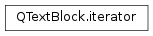

QTextBlock.iterator¶
Synopsis¶
Detailed Description¶
The
QTextBlock.iteratorclass provides an iterator for reading the contents of aPySide2.QtGui.QTextBlock.A block consists of a sequence of text fragments. This class provides a way to iterate over these, and read their contents. It does not provide a way to modify the internal structure or contents of the block.
An iterator can be constructed and used to access the fragments within a text block in the following way:
QTextBlock::iterator it; for (it = currentBlock.begin(); !(it.atEnd()); ++it) { QTextFragment currentFragment = it.fragment(); if (currentFragment.isValid()) processFragment(currentFragment); }See also
-
class
PySide2.QtGui.QTextBlock.iterator¶ -
class
PySide2.QtGui.QTextBlock.iterator(o) Parameters: o – PySide2.QtGui.QTextBlock::iteratorConstructs an iterator for this text block.
Copy constructor. Constructs a copy of the
otheriterator.
-
PySide2.QtGui.QTextBlock.iterator.__iter__()¶ Return type: PyObject
-
PySide2.QtGui.QTextBlock.iterator.__next__()¶ Return type: PyObject
-
PySide2.QtGui.QTextBlock.iterator.atEnd()¶ Return type: PySide2.QtCore.boolReturns
trueif the current item is the last item in the text block.
-
PySide2.QtGui.QTextBlock.iterator.fragment()¶ Return type: PySide2.QtGui.QTextFragmentReturns the text fragment the iterator currently points to.
-
PySide2.QtGui.QTextBlock.iterator.__ne__(o)¶ Parameters: o – PySide2.QtGui.QTextBlock::iteratorReturn type: PySide2.QtCore.boolRetuns true if this iterator is different from the
otheriterator; otherwise returnsfalse.
-
PySide2.QtGui.QTextBlock.iterator.operator++(arg__1) Parameters: arg__1 – PySide2.QtCore.intReturn type: PySide2.QtGui.QTextBlock::iteratorThe postfix ++ operator (
i++) advances the iterator to the next item in the text block and returns an iterator to the old current item.
-
PySide2.QtGui.QTextBlock.iterator.operator--(arg__1) Parameters: arg__1 – PySide2.QtCore.intReturn type: PySide2.QtGui.QTextBlock::iteratorThe postfix – operator (
i--) makes the preceding item current and returns an iterator to the old current item.
-
PySide2.QtGui.QTextBlock.iterator.__eq__(o)¶ Parameters: o – PySide2.QtGui.QTextBlock::iteratorReturn type: PySide2.QtCore.boolRetuns true if this iterator is the same as the
otheriterator; otherwise returnsfalse.
© 2018 The Qt Company Ltd. Documentation contributions included herein are the copyrights of their respective owners. The documentation provided herein is licensed under the terms of the GNU Free Documentation License version 1.3 as published by the Free Software Foundation. Qt and respective logos are trademarks of The Qt Company Ltd. in Finland and/or other countries worldwide. All other trademarks are property of their respective owners.